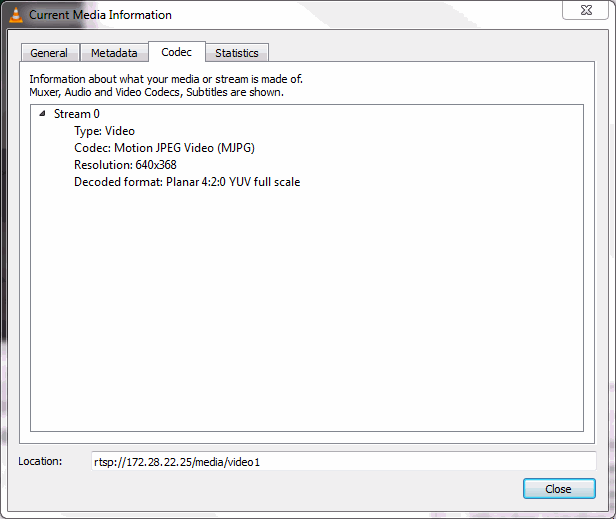
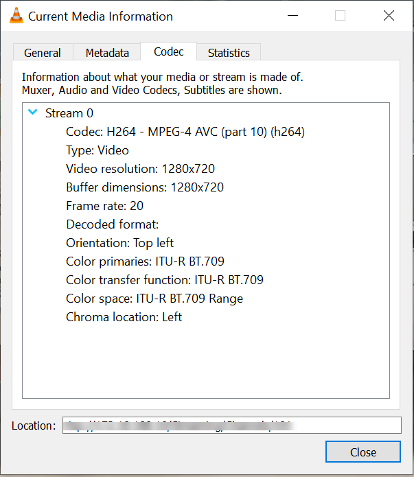

Find IP Camera URL
You need the URL of the camera to create the ipcam object. The URL
must be over the HTTP or RTSP stream for a Motion JPEG (mjpeg)
camera, and over the RTSP stream for a H.264 camera.
The URL is made up of the IP address of the camera, followed by a resource
designation, such as video.mjpeg or mjpg.cgi, as
defined by the camera vendor. For example:
cam = ipcam('http://172.28.17.104/video/mjpg.cgi')If you do not know the URL to use for the camera:
Try the camera utility or the camera web interface. Either may list the URL.
Search the Internet for your camera model.
You can use a browser, such as Mozilla® Firefox®. For example, in Firefox, go to your camera’s web interface. Right-click inside the browser and select View Image Information. The URL is listed.
MathWorks® technical support is unable to find the URL. Refer to the camera documentation, or call the vendor. Only the manufacturer can supply the camera URL.
If the URL is not working in MATLAB®, verify the URL that the camera is using by looking at it in a browser, as described in the last tip, or by looking at it in VLC media player (an open source cross-platform multimedia player).
The following table lists some popular IP camera models and their URLs. The URLS show
the video file designations, and you can substitute the IP address of your camera in
place of <IP address:port>.
| Vendor | Model Number | URL |
|---|---|---|
| Foscam | FI9821W V2 | http://<IP address:port>/cgi-bin/CGIStream.cgi?cmd=GetMJStream |
| Dlink | DCS-2132L |
|
| Trendnet | TV-IP572WI | http://<IP address:port>/video/mjpg.cgi |
| Vivotek | IB8168 |
|
| Axis | 0519-004 | http://<IP address:port>/mjpg/video.mjpg |
| Sony | SNC-CH110 | http://<IP address:port>/mjpeg |
| Hikvision | DS-2CD1240-l | rtsp://<IP address>/Streaming/Channels/101 |
| CP Plus | CP-UNC-TA21PL3-V3 |
|
Tips for Finding the Stream Codec for RTSP
To use an IP Camera over the RTSP stream, the stream codec must either be Motion JPEG or H.264 in order to be recognized in MATLAB. Use the VLC media player to check the codec type.
Open VLC media player.
In VLC, select Media > Open Network Stream.
Select Tools > Codec to open the Current Media Information dialog box.
On the Codec tab, check the Codec field to verify whether it is using Motion JPEG. The example shown here is using Motion JPEG.

An example using H.264

If your camera is not using Motion JPEG or H.264, use the camera’s web interface to change the codec to Motion JPEG or H.264.